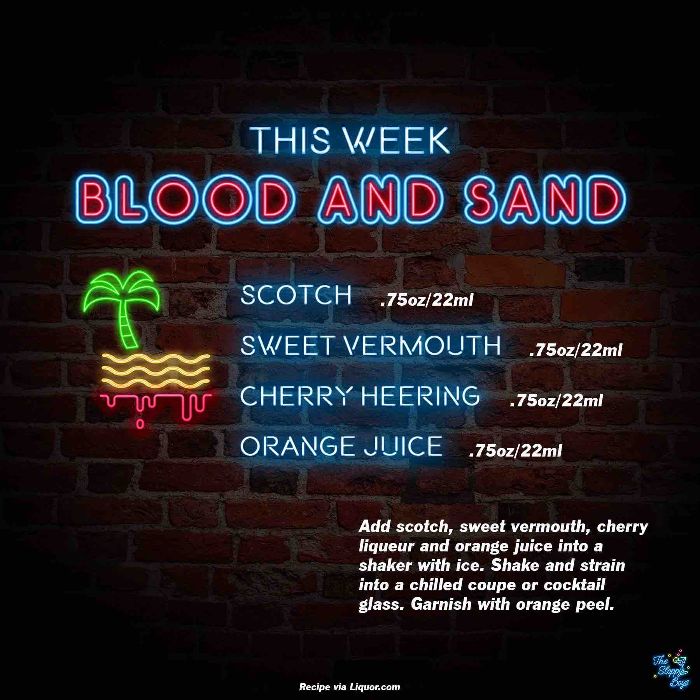

Blood and Sand
Ingredients
- Scotch (.75oz/22ml)
- Sweet Vermouth (.75oz/22ml)
- Cherry Heering (.75oz/22ml)
- Orange Juice (.75oz/22ml)
Steps
- Add scotch, sweet vermouth, cherry liqueur and orange juice into a shaker with ice.
- Shake and strain into a chilled coupe or cocktail glass.
- Garnish with orange peel.
Notes